Semiconductor CVD Yield & Process Excursion Analysis
Using manufacturing data analysis to investigate CVD yield excursion, identify potential root causes, and develop improvement directions.
This project simulates a semiconductor fab yield investigation workflow by analyzing process parameters, equipment variation, and statistical evidence.
500 CVD Batches · 3 CVD Tools · synthetic data SPC Monitoring · Excursion Detection · Tool Health · Root Cause Investigation · Virtual DOE · Process Window Analysis
01 / Scope
Project Overview
This project simulates a semiconductor CVD monitoring environment. Python is used to compare batch outcomes, screen process parameters, and trace a lower-yield interval on CVD-02. The objective is to practice the sequence an equipment or process engineer would use: detect an excursion, locate it in time, compare operating conditions, and define the next checks.
The dataset is synthetic. Findings below describe associations in the simulated records and should be treated as investigation leads.
500Simulated CVD batch records
67Batches below 95% yield overall
7 / 26CVD-02 batches below threshold on 2026-01-10
02 / Objective
Project Objective
This case study simulates a yield excursion investigation in semiconductor manufacturing using 500 CVD batch records.
Analyze process parameter behavior.
Identify abnormal yield excursions.
Compare normal and abnormal batches.
Investigate tool and recipe variation.
Develop directions for root cause verification.
The goal is to apply manufacturing engineering logic to a process problem, from observation through verification and corrective action.
03 / Method
Semiconductor Process Investigation Flow
Each stage narrows the investigation before a process change is considered.
Process Data Collection
Yield Excursion Detection
Parameter Correlation Analysis
Normal / Abnormal Comparison
Tool & Recipe Isolation
Root Cause Investigation
Corrective Action
04 / Process
CVD Process Background
Chemical Vapor Deposition (CVD) is a key semiconductor process used for thin film deposition. Gases react in a controlled chamber to form a film on the wafer. Temperature, pressure, gas flow, and process time shape the deposition conditions; film thickness and defects provide output signals.
Process engineers evaluate multiple parameters together rather than judging root cause from a single variable.
Parameter
Engineering Meaning
Temperature
Reaction rate and film quality control
Pressure
Reaction environment and deposition behavior
Gas Flow
Reactant concentration and uniformity
Film Thickness
Process output indicator
Defect Count
Quality indicator
Yield
Manufacturing performance indicator
05 / Deposition sequence
Process Flow Concept
A simple monitoring loop connects equipment settings to metrology and yield signals.
01 / ConfigureConfirm tool and recipe.
02 / DepositTrack chamber temperature, pressure, gas flow, and time.
03 / MeasureReview film thickness and defects.
04 / MonitorCompare yield with the 95% threshold.
05 / InvestigateTrace abnormal batches by tool and time.
06 / Evidence
Process Trend Monitoring
The following charts focus on CVD-02 on 2026-01-10. The marked interval is a review window derived from the simulated batch sequence, not a confirmed equipment failure.
Yield Analysis
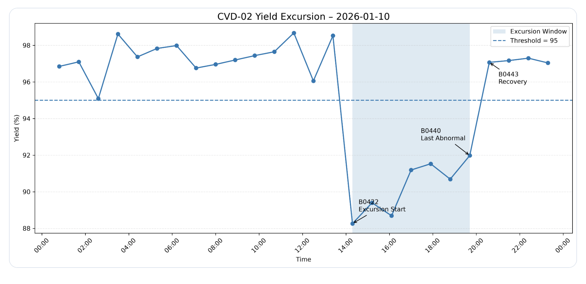
PurposeDetect the time window in which batch yield falls below the monitoring threshold.
Engineering InsightSeven of 26 CVD-02 batches are below 95%. Their timing directs the parameter review; yield alone does not identify a root cause.
Temperature Trend
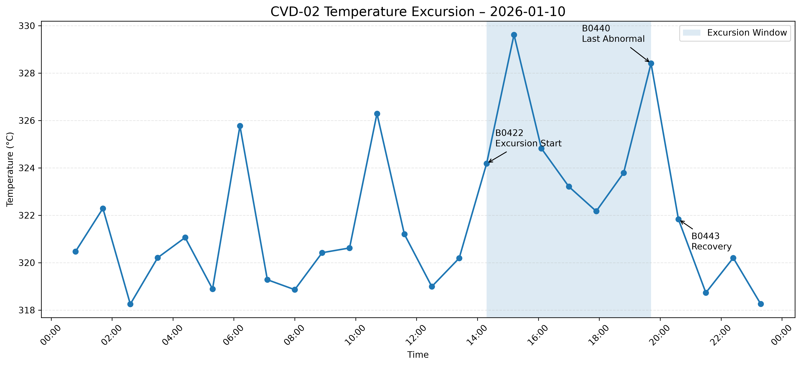
PurposeMonitor chamber temperature stability during deposition.
Engineering InsightHigher temperatures appear during the lower-yield interval. Recipe setpoints and sensor history should be checked before attributing a yield effect.
Pressure Trend
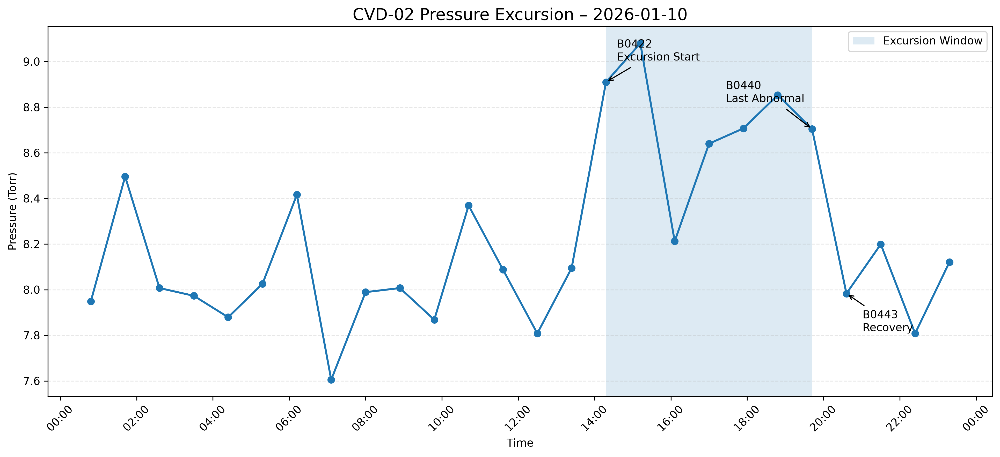
PurposeMonitor pressure stability and identify deviations from surrounding batches.
Engineering InsightPressure rises during several lower-yield batches. Check pressure control, recipe, and maintenance records to test this lead.
Gas Flow Trend
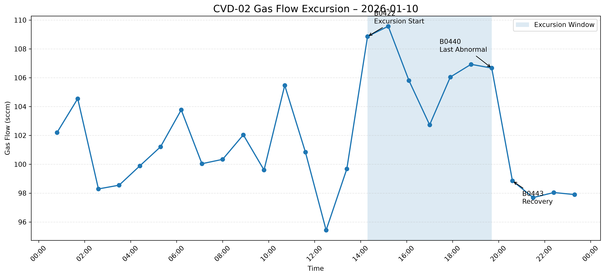
PurposeMonitor gas delivery consistency across the batch sequence.
Engineering InsightGas flow increases in the same period. Compare commanded setpoints with measured flow and check recipe changes before linking it to yield.
07 / Metrology
Film Thickness Analysis
Film thickness is a measured outcome of deposition. Its distribution can reveal shifts or wider variation that justify a recipe-level review.
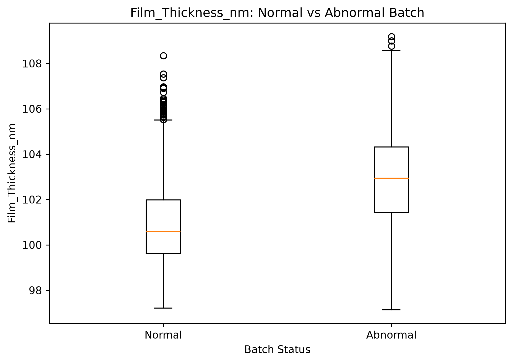
PurposeCompare measured film thickness distributions across yield groups.
Engineering InsightThe abnormal group has a higher median, but recipes in the dataset have different thickness targets. Compare within the same recipe before treating this as a process deviation.
08 / Comparison
Normal vs Abnormal Batch Comparison
Batches are labeled abnormal when yield is below 95%. Group comparisons are a screening tool: they help prioritize checks, but the label is derived from yield and is not an independent fault diagnosis.
The table narrows the comparison to CVD-02 on 2026-01-10, rather than mixing all tools and dates.
Parameter
Normal (n=19)
Abnormal (n=7)
Yield
97.30%
90.25%
Temperature
320.62 °C
325.17 °C
Pressure
8.04 Torr
8.73 Torr
Gas Flow
100.23 sccm
106.66 sccm
Film Thickness
101.33 nm
104.81 nm
The abnormal group shows higher average values for these parameters. Compare within the same recipe and inspect tool records before treating any difference as causal.
09 / Statistical screen
Correlation & Statistical Evidence
Across all 500 simulated batches, Pearson correlation is used to rank signals associated with yield. It is a screening measure, not a causal test. Defect Count has the strongest negative relationship (r = −0.635), followed by Pressure (r = −0.432), Temperature (r = −0.350), Film Thickness (r = −0.316), and Gas Flow (r = −0.244).
Welch's t-test compares normal and abnormal groups across the full dataset. The p-values below describe group differences; Cohen's d describes their standardized size. Both are affected by recipe mix and by defining the groups using yield.
Parameter
Yield r
Welch p-value
Cohen's d
Pressure
−0.432
2.52 × 10⁻⁷
1.357
Temperature
−0.350
5.23 × 10⁻⁷
0.905
Gas Flow
−0.244
0.00475
0.528
Film Thickness
−0.316
3.81 × 10⁻⁷
0.859
Process Time
−0.110
0.0170
0.372
For the focused CVD-02 comparison on 2026-01-10, Cohen's d is 2.961 for Pressure, 2.606 for Gas Flow, 1.915 for Temperature, and 0.251 for Process Time. These selected-window effect sizes help prioritize checks; the group sizes are 19 normal and 7 abnormal batches.
10 / Isolation
Tool & Recipe Investigation
CVD-02 has the highest overall abnormal ratio. A chi-square test across tools gives p = 0.0258, indicating an association between Tool_ID and batch status in this simulated dataset. Average temperature, pressure, and gas flow are similar across the three tools, so a tool-wide average alone does not explain the excursions.
Tool_ID
Abnormal / Total
Abnormal Ratio
Mean Yield
CVD-01
18 / 160
11.3%
96.56%
CVD-02
34 / 181
18.8%
96.45%
CVD-03
15 / 159
9.4%
96.72%
Recipe isolation is required before interpreting film thickness. RCP-A targets 100 nm and RCP-B targets 105 nm; the dataset contains 400 RCP-A and 100 RCP-B batches. On CVD-02 on 2026-01-10, 5 of 21 RCP-A batches and 2 of 5 RCP-B batches fall below 95%. The RCP-B sample is too small to isolate a recipe effect. Compare a tool's batches within the same recipe and time window, then review setpoints and maintenance history. Recipe membership itself is not evidence of a recipe fault.
11 / Engineering judgment
Root Cause Analysis Example
Problem
Yield variation is observed between CVD-02 production batches on 2026-01-10.
Method
Identify the low-yield interval, compare normal and abnormal batch averages, and inspect process trends in time order.
Finding
Higher pressure, gas flow, temperature, and film thickness coincide with lower yield in this selected interval. These are candidate signals for troubleshooting.
Recommendation
Continue monitoring, compare batches within the same recipe, verify setpoints and sensors, review maintenance logs, and seek repeat evidence before changing process controls.
Interpretation limit. The records are simulated and the groups contain a mix of recipes. This analysis does not prove a root cause or validate an equipment fix.
12 / Interpretation
Engineering Interpretation
Defect Count has the strongest negative correlation with Yield and is a major quality indicator. It does not, by itself, explain where the defect increase begins.
Among controllable process parameters, Pressure and Temperature warrant further investigation. Gas Flow also shifts in the selected CVD-02 window.
Film Thickness is a process output response. Its increase should be checked against recipe-specific targets before it is treated as a root cause.
CVD-02 has a higher abnormal batch ratio, while its average process conditions are similar to the other tools. Check variation over time and equipment stability.
13 / Action plan
Engineering Recommendation & Next Action
The observations below are hypotheses to verify against equipment and process history. They are not confirmed faults.
Finding
Possible Cause
Recommended Action
Pressure variation
APC control instability or chamber condition variation
Review pressure SPC trend and control response.
Temperature drift
Heater control variation
Check temperature stability and PM history.
Film Thickness increase
Deposition condition shift
Review process window and recipe stability.
Higher CVD-02 excursion ratio
Tool-to-tool variation
Compare alarm history and maintenance records.
Next verification. Current results provide a root cause investigation direction. Equipment history and longer time-series analysis are required for final confirmation before corrective action.
14 / Decision discipline
Engineering Mindset
A parameter shift observed with lower yield is a hypothesis, not proof that “Parameter X causes yield loss.” Engineering decisions should follow a traceable sequence:
Observation
Statistical Evidence
Hypothesis
Verification
Corrective Action
15 / Practice
Technical Skills
A practical workflow for equipment and process investigation, with transparent limits on what the data can support.
Python
Pandas
NumPy
Matplotlib
SciPy
Data Inspection
Statistical Comparison
Parameter Correlation
Process Monitoring
Yield Analysis
Troubleshooting Logic
Engineering Evidence
SPC & Excursion Detection
I-MR charts use the first chronological 60% of each Tool × Recipe group as a provisional Phase I baseline, without filtering by Yield. Limits are frozen for the remaining observations. Individuals center = baseline mean; sigma = mean successive moving range / 1.128; I limits = mean ± 3 sigma; MR UCL = 3.267 × mean moving range and MR LCL = 0. Sample SD is also exported, but it is not the I-limit estimator. Moving ranges use successive observations within the same tool/recipe, which can be separated in clock time. No run rules or multi-test false-alarm adjustment is applied to charts. Baseline signals exist, so the baseline is not proven stable: limits are retrospective screening limits and require Phase I investigation before production deployment. Yield limits are not clipped to 0–100; control limits are not specifications.
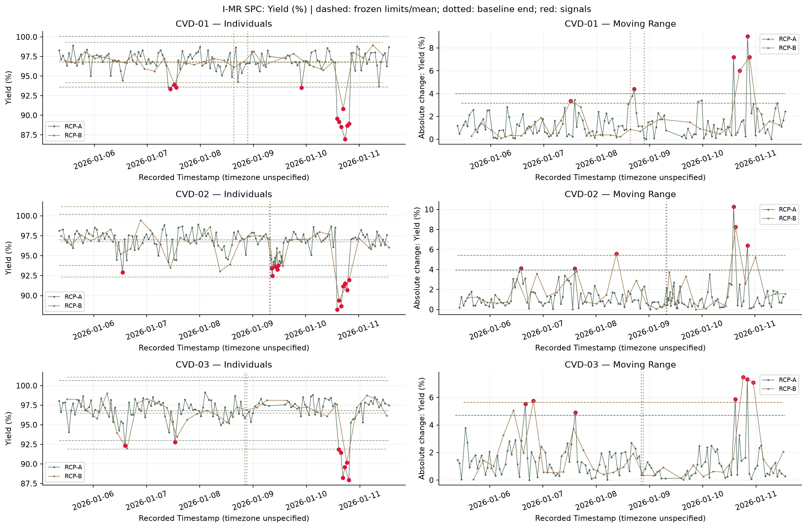
Engineering InsightFrozen I-MR limits flag 58 Individuals signals and 28 MR signals across 38 unique monitoring batches. Signals count parameter-level observations, not independent equipment failures.
Evidence & ActionReview the corresponding CSV in results/ and confirm tool/recipe context before intervention.
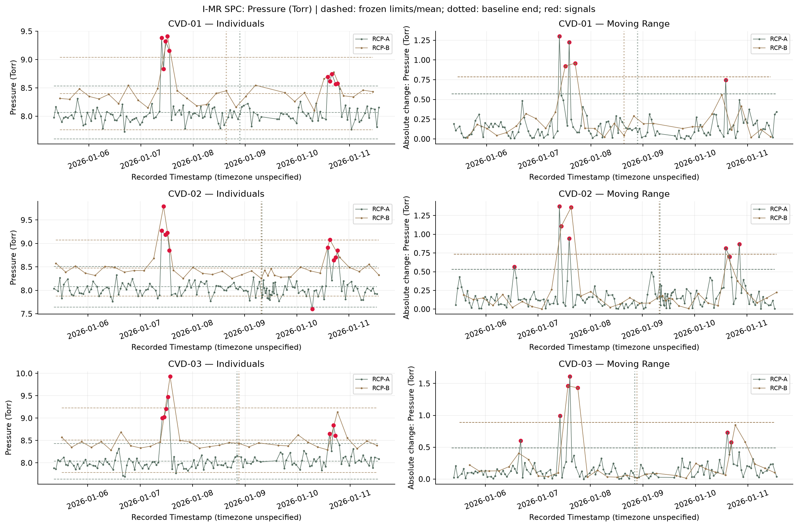
Engineering InsightFrozen I-MR limits flag 58 Individuals signals and 28 MR signals across 38 unique monitoring batches. Signals count parameter-level observations, not independent equipment failures.
Evidence & ActionReview the corresponding CSV in results/ and confirm tool/recipe context before intervention.
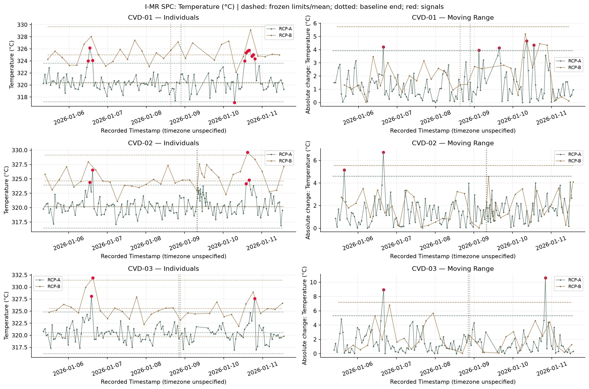
Engineering InsightFrozen I-MR limits flag 58 Individuals signals and 28 MR signals across 38 unique monitoring batches. Signals count parameter-level observations, not independent equipment failures.
Evidence & ActionReview the corresponding CSV in results/ and confirm tool/recipe context before intervention.
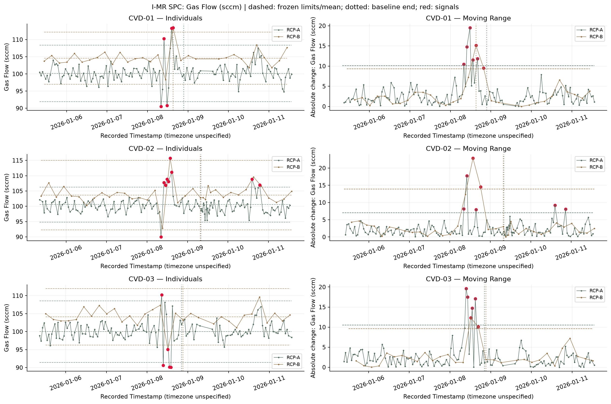
Engineering InsightFrozen I-MR limits flag 58 Individuals signals and 28 MR signals across 38 unique monitoring batches. Signals count parameter-level observations, not independent equipment failures.
Evidence & ActionReview the corresponding CSV in results/ and confirm tool/recipe context before intervention.
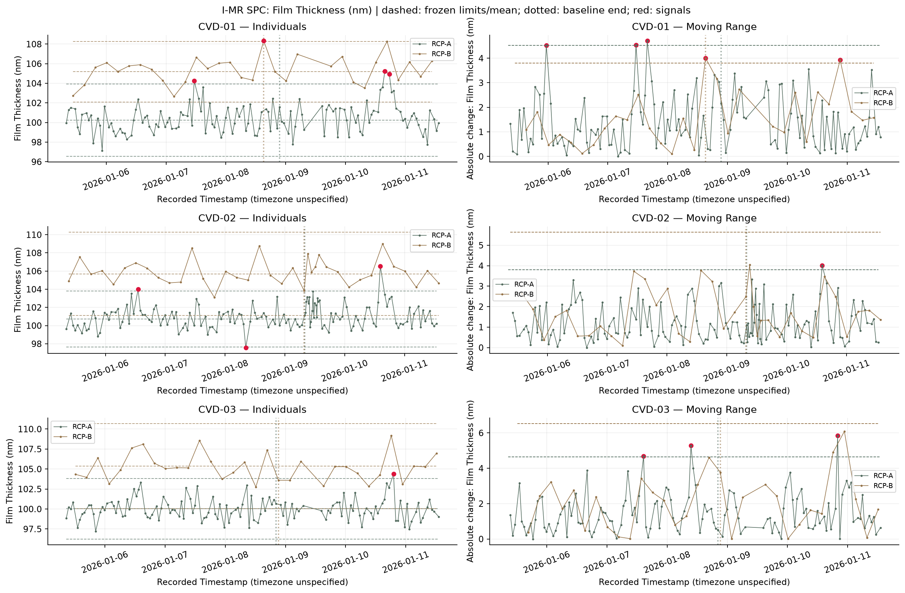
Engineering InsightFrozen I-MR limits flag 58 Individuals signals and 28 MR signals across 38 unique monitoring batches. Signals count parameter-level observations, not independent equipment failures.
Evidence & ActionReview the corresponding CSV in results/ and confirm tool/recipe context before intervention.
Engineering Evidence
CVD-02 Excursion Case Study
CVD-02 on 2026-01-10: 14:18 onset, 19:42 last low-yield observation, 20:36 first observed recovery. 7 low-yield batches average 90.25% versus 97.30% for the other 19 batches that day. Pressure averages 8.729 versus 8.036 Torr; Temperature 325.17 versus 320.62 °C; Gas Flow 106.66 versus 100.23 sccm; Film Thickness 104.81 versus 101.33 nm; Defect Count 2.71 versus 1.00. These day-level averages mix recipes; confirm within recipe before acting. At 14:18, pressure and yield shift in the same batch, while Defect Count is 0. Defects increase in the next sampled batch. The data do not support “Pressure deviation → Defect increase → Yield degradation” as a causal sequence. Sampling resolves observed batch order only.
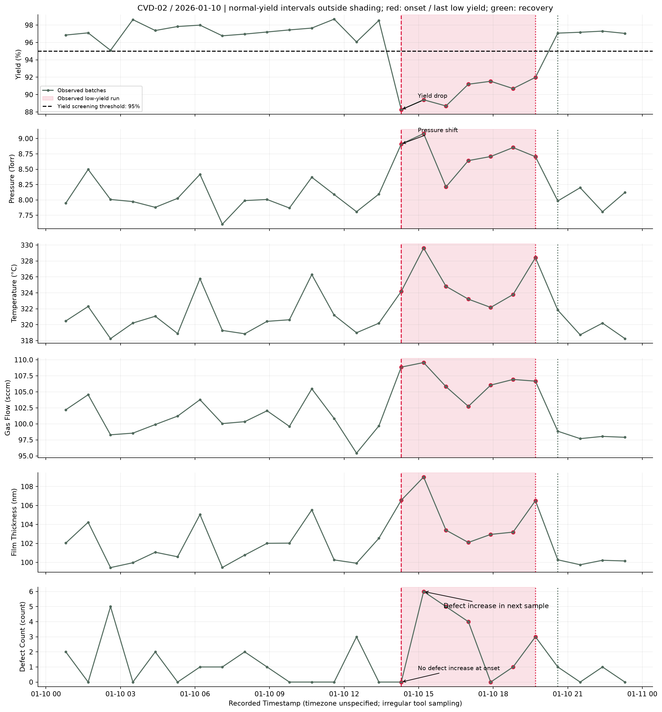
Engineering InsightPressure and Yield shift together; defect increase occurs in a later sample. Correlation does not prove causation.
Evidence & ActionReview the corresponding CSV in results/ and confirm tool/recipe context before intervention.
Engineering Evidence
Tool Health Analysis
CVD-02 has the highest equal-weight relative instability index (1.073), driven by abnormal rate (18.8%). However, CVD-01 has the largest recipe-centered Yield SD (2.003 percentage points), and CVD-03 the largest recipe-centered Pressure SD (0.269 Torr). There is no single worst tool on every stability metric.
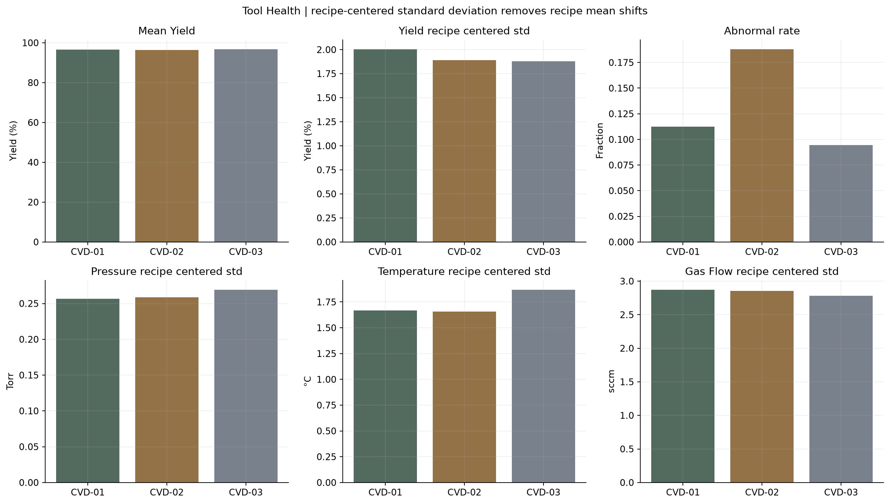
Engineering InsightUse recipe-centered variability alongside abnormal rate; the tool ranking changes with the metric.
Evidence & ActionReview the corresponding CSV in results/ and confirm tool/recipe context before intervention.
Engineering Evidence
Root Cause Analysis
Potential contributor ranking: Defect_Count → Pressure_Torr → Temperature_C → Film_Thickness_nm → Gas_Flow_sccm → Process_Time_s. Defect Count is an outcome/possible mediator, not a confirmed equipment cause. Temperature ranks above Film Thickness and Gas Flow in the combined evidence score. Equipment maintenance data is not available, therefore these are engineering hypotheses rather than confirmed hardware root causes.
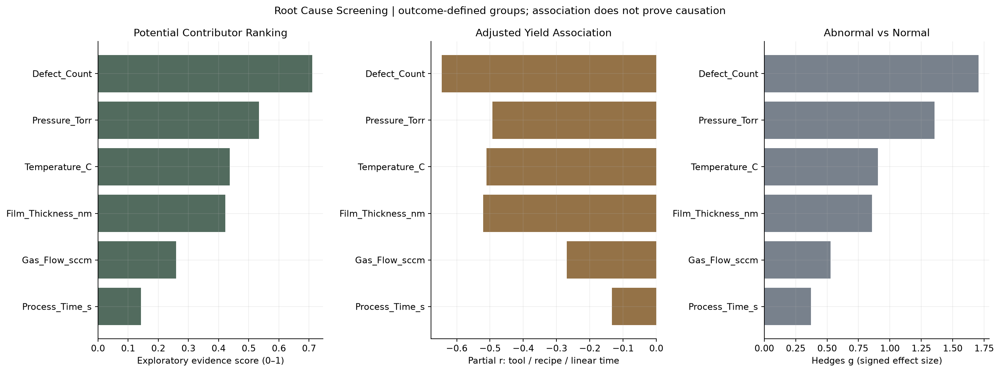
Engineering InsightInvestigate Pressure as a process variable; Defect Count may be an outcome rather than a controllable cause.
Evidence & ActionReview the corresponding CSV in results/ and confirm tool/recipe context before intervention.
Engineering Evidence
Virtual DOE / Observational Process Window Analysis
Pressure × Temperature interaction coefficient is -0.387 percentage points per product of standardized factors (HC3 p=2.6e-08); this is an observational association, not an experimental treatment effect. No actual designed wafer experiment was performed. Factors are standardized; Tool, Recipe and linear time are included.
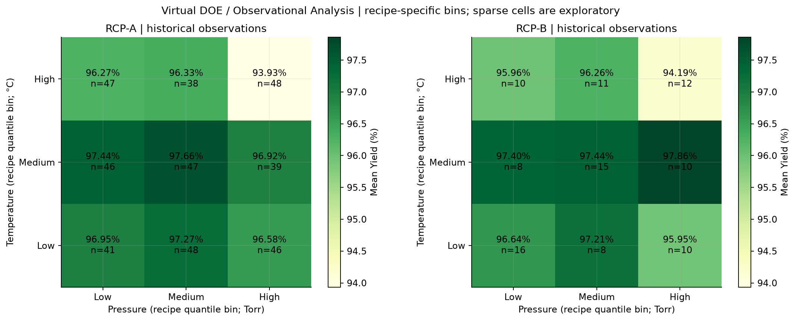
Engineering InsightThe observed interaction needs replication in randomized, tool-blocked experiments.
Evidence & ActionReview the corresponding CSV in results/ and confirm tool/recipe context before intervention.
Engineering Evidence
Process Window
RCP-A: observed candidate Pressure 7.965–8.072 Torr, Temperature 319.85–320.77 °C; n=47, mean Yield 97.66%, SD 0.79 percentage points, abnormal rate 0.0%. RCP-B: observed candidate Pressure 8.470–8.660 Torr, Temperature 324.52–325.38 °C; n=10, mean Yield 97.86%, SD 0.66 percentage points, abnormal rate 0.0%. Candidate score is mean minus SD with n≥10. Sample-enclosing rectangles are exploratory, not qualified operating limits.
Evidence & ActionReview the corresponding CSV in results/ and confirm tool/recipe context before intervention.
Engineering Recommendations
SPC monitoring
Evaluate each completed batch against frozen Tool × Recipe I and MR limits for Yield, Pressure, Temperature, Gas Flow and Film Thickness. Route any signal to engineering review; keep the 95% yield screening threshold separate from statistical limits.
Pressure alarm
Generate an investigation alert for Pressure outside its Tool × Recipe I limits or MR above its limit. Attach Batch_ID, recipe, previous batch and Yield/Defect trends; review recipe transitions before attributing the signal to hardware.
Tool-specific monitoring
Prioritize CVD-02 low-yield recurrence review; track CVD-01 Yield variability and CVD-03 Pressure/Temperature variability separately. Review recipe-centered variability weekly alongside abnormal rate, rather than average Yield alone.
Hold / release proposal
Propose an engineering hold/review for Yield <95% or a critical process signal pending disposition. This dataset does not authorize production holds or release. Release requires approved recipe specifications, metrology checks and equipment-log review; qualified consecutive-batch criteria must be set by the fab.
Maintenance escalation
If same-recipe Pressure signals repeat after recipe/setpoint review, open an equipment inspection request and review pressure calibration, throttle-valve response, vacuum/leak checks and MFC setpoint-versus-actual logs. Preventive maintenance timing requires approved recurrence criteria and maintenance evidence.
Window confirmation
Use the supported recipe-specific candidate cells to plan a randomized Pressure × Temperature DOE with center points, replication, tool blocking and fixed Gas Flow. Qualify film thickness/uniformity and defects as additional responses before widening process limits.
Equipment maintenance data is not available, therefore these are engineering hypotheses rather than confirmed hardware root causes.
Semiconductor Process Analysis · Yield Analysis · SPC · Process Excursion Detection · Root Cause Analysis · DOE · Process Window Analysis · Tool Health Monitoring · Python Data Analysis · Engineering Troubleshooting